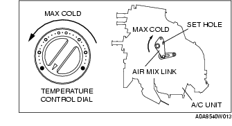

Climate control unit wire adjustment
Air Intake Wire
1. Set the REC/FRESH lever at fresh.
- • If the air intake wire is set without first fixing the air intake link position, it is possible that the air intake door cannot be switched normally.
2. Set the air intake link to the fresh position, and insert a 3 mm {0.1 in} thick tape-wrapped flathead screwdriver into the set guide to fix the position of the link.

3. Connect the air intake wire to air intake link.
4. Clamp the air intake wire to wire clamp.
5. Remove the flathead screwdriver, and verify that the REC/FRESH lever can move its full stroke.
Air Mix Wire
1. Set the temperature control dial at max cold.
- • If the air mix wire is set without first fixing the air mix link position, it is possible that the air mix door cannot be switched normally.
2. Set the air mix link to the max cold position and insert an approx. ø5 phillips screwdriver into the set hole to fix the position of the link.

3. Connect the air mix wire to air mix link.
4. Clamp the air mix wire to wire clamp.
5. Remove the screwdriver, and verify that the temperature control dial can move its full stroke.
Airflow Mode Wire
1. Set the airflow mode selector dial at vent.
- • If the airflow mode wire is set without first fixing the airflow mode main link position, it is possible that the airflow mode door cannot be switched normally.
2. Set the airflow mode main link to the vent position and insert an approx. ø5 phillips screwdriver into the set hole to fix the position of the link.

3. Connect the airflow mode wire to airflow mode main link.
4. Clamp the airflow mode wire to wire clamp.
5. Remove the screwdriver and verify that the airflow mode selector dial can move its full stroke.